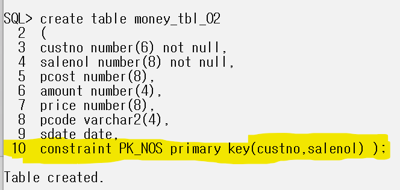
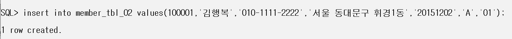

1. 예제: 쇼핑몰
다음 예제 DB 문
2. 아쉽게도 오라클 전용 프로그램을 사용할 수 없어 자체적으로 cmd 로 작업을 해야한다.
다음 내용은 오라클 접속이다.
3. DB 테이블 생성상황이다. sql 쿼리문을 공유할려 하였으나 직접 쳐야 실력이 늘기에 공유 X
다음은 member tbl , money tbl create 부분이다.
Primary 키 설정 부분은 외우도록 하자.

4. insert 부분이다. 예시문만 보여줄테니 나머지는 알아서 넣도록

5. select * from 해서 잘 들어갔는지 확인해본다.
6. ★ 유의점 : DB 컬럼 타입이 Number 이면 ' ' 를 사용하지 않는다.
마침표는 ; 이다.